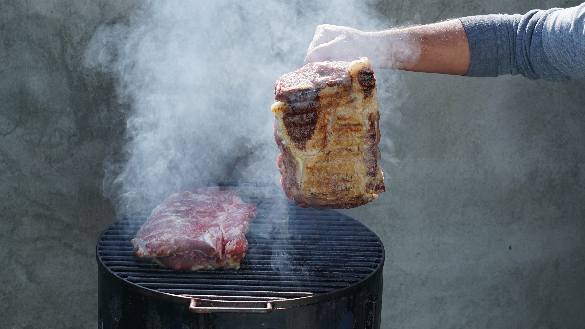
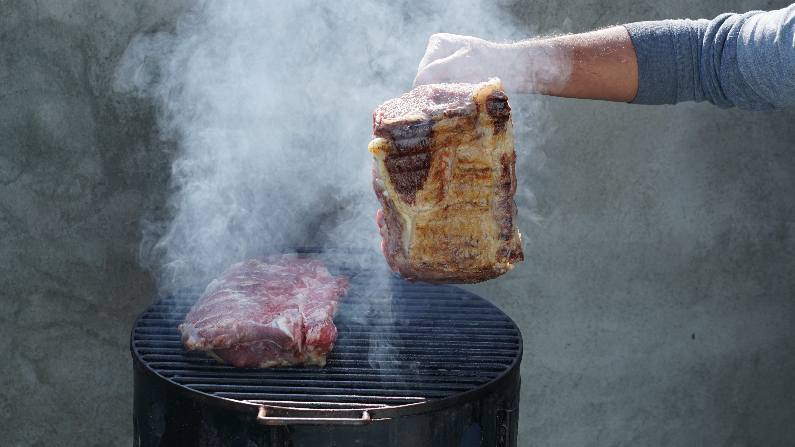

Asado
Historia: El asado argentino es un pilar cultural que se remonta a la época de los gauchos (vaqueros) en las pampas argentinas. Los gauchos solían cocinar carne en grandes parrillas al aire libre. Con el tiempo, el asado se convirtió en una tradición arraigada en la cultura argentina, donde las reuniones alrededor del fuego y la carne asada son momentos de camaradería y celebración.
Importancia: El asado es más que una comida; es un ritual social y culinario que refleja la pasión argentina por la carne. La elección y preparación de los cortes, así como las técnicas de cocción en la parrilla, son temas de conversación y debate en todo el país.
Ingredientes: Los ingredientes principales son los cortes de carne de res de alta calidad. Los cortes populares incluyen el bife de chorizo, el asado de tira, la entraña y la morcilla. A menudo se sazonan con sal gruesa antes de cocinar.
Preparación:
- Elección de la carne: Se seleccionan cortes de carne de res fresca y de alta calidad.
- Sazonado: Se sazona la carne con sal gruesa y, a veces, con condimentos adicionales como chimichurri.
- Cocción en la parrilla: La carne se coloca en la parrilla caliente y se cocina lentamente a la perfección, volteándola ocasionalmente.
- Servicio: Una vez cocida, la carne se corta en porciones y se sirve en la mesa para que los comensales disfruten compartiendo.

 
